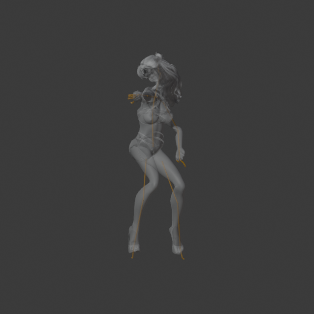

五張 Golden Frames


2026-10-13（臺北） · ODA · 65 骨 · 真實蒙皮 · 18.25 秒
正在準備 GLB…
GLB 載入後可下載按鈕載入原始 GLB，保留原始材質貼圖。
原始 GLB 載入後可下載
插骨 GLB 載入後可下載65 骨拓撲、權重、438 幀有限數值、循環首末吻合、GLB 重載與全片影片解碼已執行。請以 JSON 各項結果為準。來源姿勢校正與手指定位仍有適用範圍限制；不宣稱任意無骨架人物全自動通過。
驗收 JSON · GLB 重載 JSON · Godot 24 FPS 比對 JSON · 素材與 SHA-256影片：Workbench 貼圖模式、12 FPS；動畫 GLB：24 FPS、438 幀。GLB 保留 PBR 材質、貼圖與靜態 Morph；未匯出未使用的 Morph 動作軌。
公開來源為 ODA 既有模型；來源授權資料仍待逐項追溯，未自動標示再散布許可。
共用 AutoRig65 Python Class · 3230c6b9ac96713d02cf83addf1ba752f21a2c43